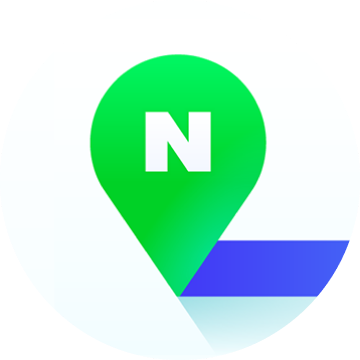
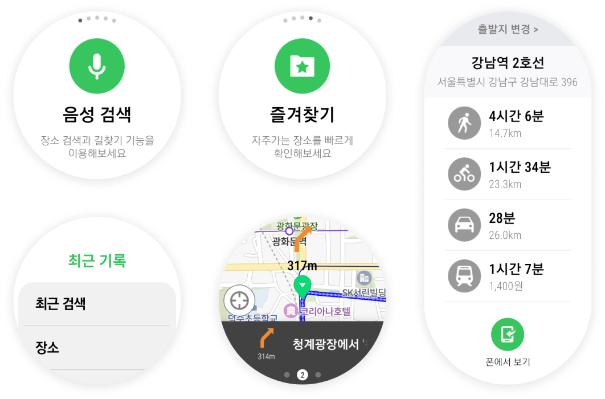

Search the places you want to go with your voice, choose among various navigation options,
and bookmark important locations for quick access.


SPEAK AND GO
Use your voice to search your next
destination
SAVE YOUR FAVORITES
A place where everyone has
opportunities to achieve their
professional best
PREVIEW YOUR PATH
A place where everyone
celebrates shared achievements
TURN-BY-TURN NAVIGATION
A place where everyone is
inspired by working together
ALL MODES OF TRANSPORTATION
A place where everyone’s work
brings benefit to the world
FREQUENTLY ASKED QUESTIONS
DO I NEED THE NAVER MAP MOBILE APP TO USE THIS WATCH APP?
No, as long as you have internet connection, the Naver Map WearOS app will work. If you want to see details on your mobile phone, however, you will need to have the Naver Map mobile app installed.
IS THE NAVER MAP WATCH APP RELATED TO NAVER CO., LTD.?
Yes. This app is a Naver map app for Wear OS that has been officially approved by Naver Co., Ltd. Related information can be found at the following link. (https://blog.naver.com/naver_map/222497067056)
CAN I SEE MY FAVORITES AND RECENT SEARCHES I HAVE ON THE NAVER MAP MOBILE APP ON MY WATCH?
No, this is a standalone watch app that is not connected to the mobile version of the Naver Map, so we do not have access to that informatio
DOES THIS APP WORK IN ANY LOCATION GLOBALLY?
We only support locations in South Korea for now.
HOW DO I ADD LANGUAGES TO VOICE OR TEXT SEARCH?
On your watch, go to ‘Settings’, then ‘General’, then ‘Input’. You’ll be able to add languages from there.
DOES NAVER MAP, NAVIGATION (WEAROS) SHARE MY SEARCH HISTORY WITH ANY OTHER APPS OR PEOPLE?
NO. Your information will never be shared with any other apps nor anyone other than you. If you delete the app, all of your search history and the places you have favorited will be permanently deleted.
I'M HAVING TROUBLE WITH THE APP. HOW DO I CONTACT CUSTOMER SUPPORT FOR NAVER MAP, NAVIGATION(WEAROS)?
Go to Tecace Support and we would be happy to assist you.